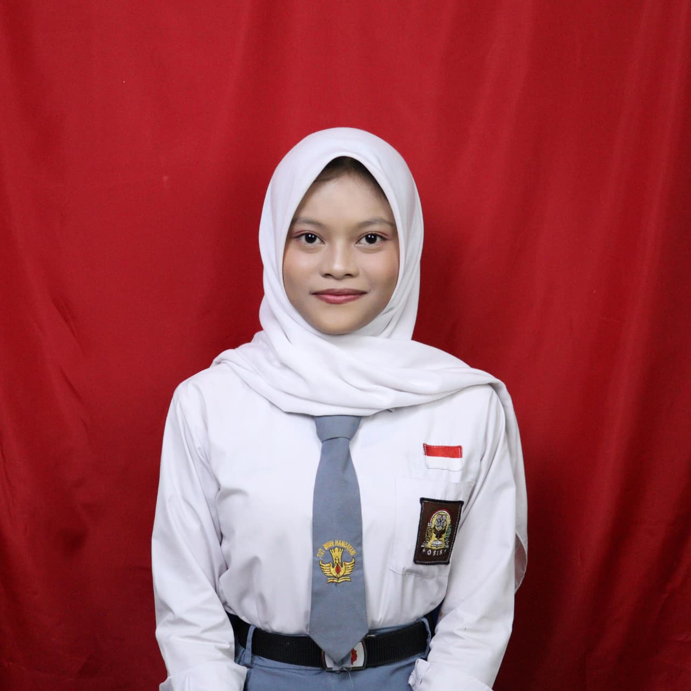
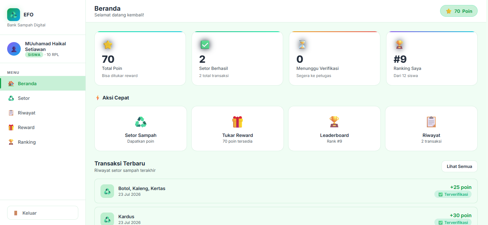
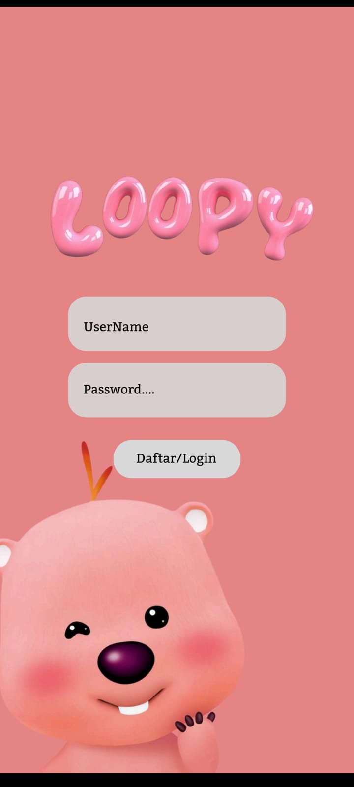

Selamat menjelajahi portofolio saya!
Hubungi SayaBerawal dari ketertarikan pada keindahan visual, saya menemukan passion di dunia UI/UX Design dan Frontend Development. Sebagai siswi kelas 11 RPL, saya fokus menjembatani desain antarmuka yang estetik dengan implementasi kode yang bersih dan responsif. Saya terbiasa merancang wireframe dan prototype di Figma, lalu mewujudkannya menggunakan HTML, CSS, dan JavaScript. Saat ini saya terus aktif mengasah kemampuan dalam membangun aplikasi web modern dan mempelajari alur workflow industri software development.

Projek kelompok ini dikembangkan untuk mendukung kesadaran lingkungan di lingkungan sekolah melalui sistem digital. Tampilan antarmuka (dashboard) dirancang bersih dan segar dengan dominasi warna hijau untuk mencerminkan konsep ramah lingkungan. Pengguna (siswa) dapat dengan mudah memantau jumlah poin, melihat riwayat transaksi sampah yang telah diverifikasi, hingga mengecek posisi mereka di leaderboard sekolah.

Eksplorasi desain antarmuka aplikasi bertema karakter menggemaskan menggunakan Figma. Projek ini berfokus pada pembuatan halaman login dan register yang interaktif, estetik, dan penuh warna. Dibuat khusus untuk menarik perhatian pengguna muda dengan penggabungan tipografi yang unik dan ilustrasi karakter favorit.
Email:azzuraghazalaa@gmail.com
Instagram: @ghazalaa.k